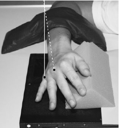

Hand(Oblique)
Centering point:Directed to 3rd metacarpophalangeal joint
Perpendicular to the IR

Cassette Size:24cm x 30cm (10 x 12ins)
Landscape, divided in half, usually fits 2 projections, use lead masking for unused area
Exposure Factors:52kVp on
2.5mAs
FFD:100cm
Bucky/Grid:No
Filter:No
Collimation:Centre: 3rd metacarpophalangeal joint
Shutter A: To include distal phalanges to 2.5cm of distal radius and ulna
Shutter B: To include soft tissues of the first and fifth fingers
Pathologies:Fractures, dislocations, foreign bodies. Pathological processes - osteoporosis and osteoarthritis
Position of patient and cassette
- Seat patient at end of table or standing.
- Flex elbow to 90 degrees.
- Hand and forearm resting on table.
- Pronate hand.
- Rotate wrist and hand laterally 45° and use a sponge for support.
- Fingers separated and parallel to IR.
- Centred to the 3rd metacarpophalangeal joint.